Noah's Ark
Learn how Noah followed God's instructions to build an ark and save the animals from the great flood.
Discover timeless tales of faith, courage, and God's love
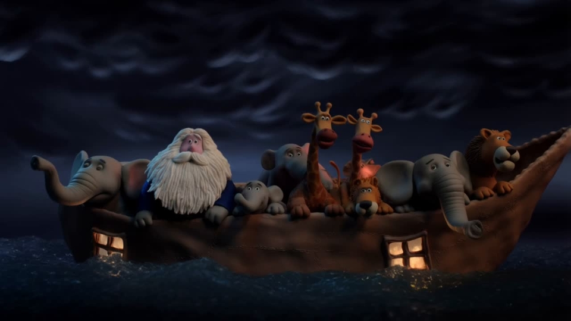
Learn how Noah followed God's instructions to build an ark and save the animals from the great flood.
The exciting story of Jonah's journey inside a whale and God's amazing forgiveness.
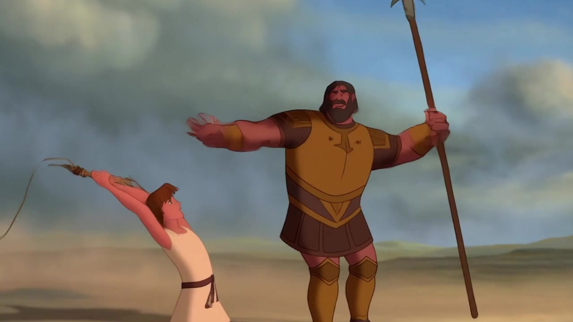
See how young David defeated the giant Goliath with God's strength and five smooth stones!
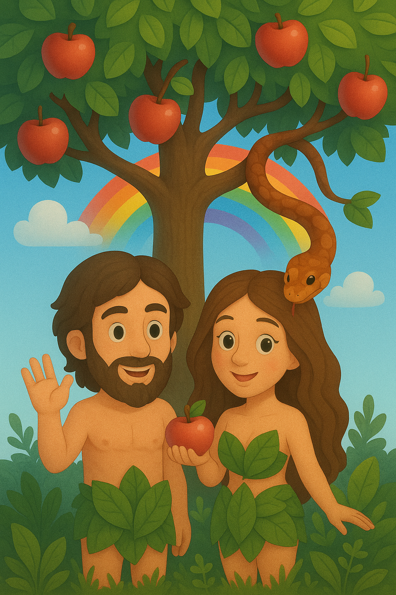
The story of the first people God created and the beautiful Garden of Eden.
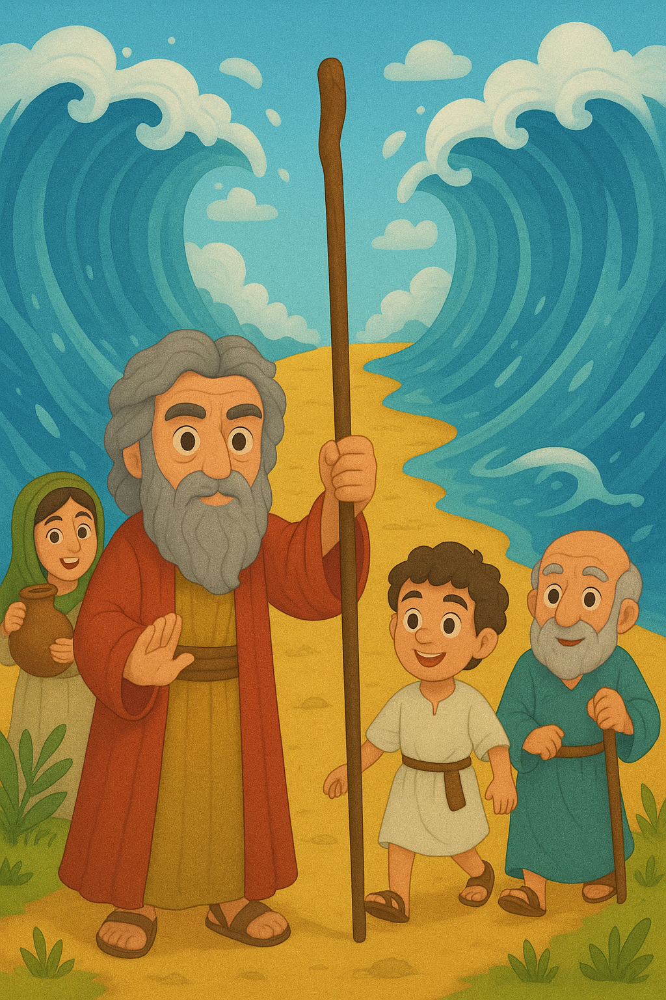
Discover how Moses parted the Red Sea to lead God's people to freedom.
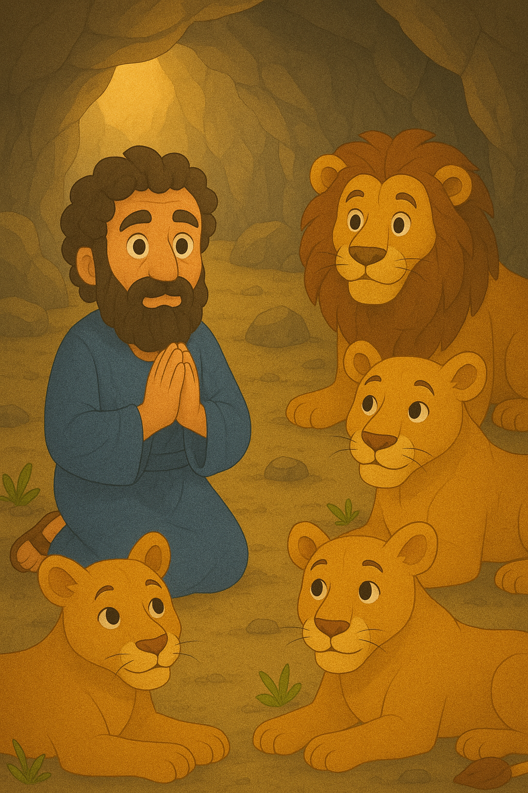
See how God protected Daniel when he was thrown into the lions' den.
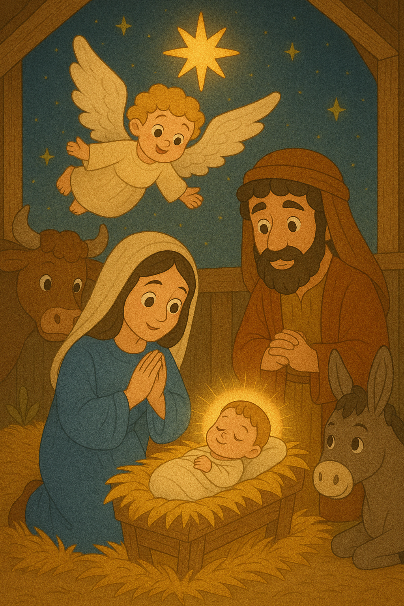
The wonderful story of how Jesus was born in Bethlehem on Christmas night.
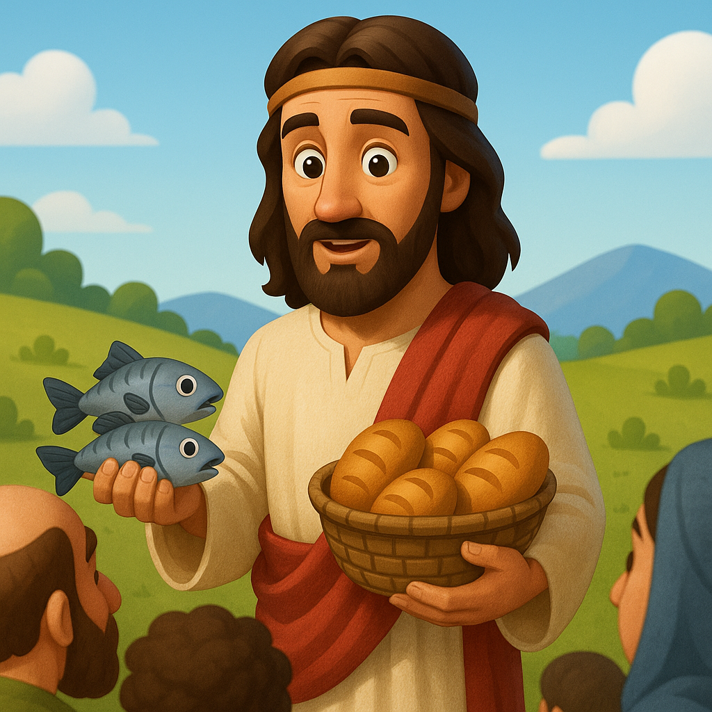
Jesus performs an amazing miracle with five loaves and two fish!
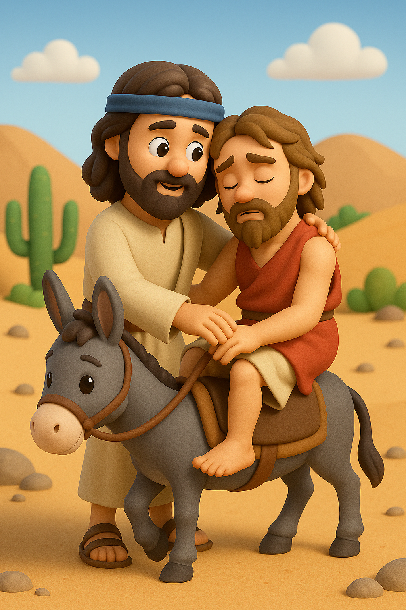
Learn about kindness and helping others from this important parable.
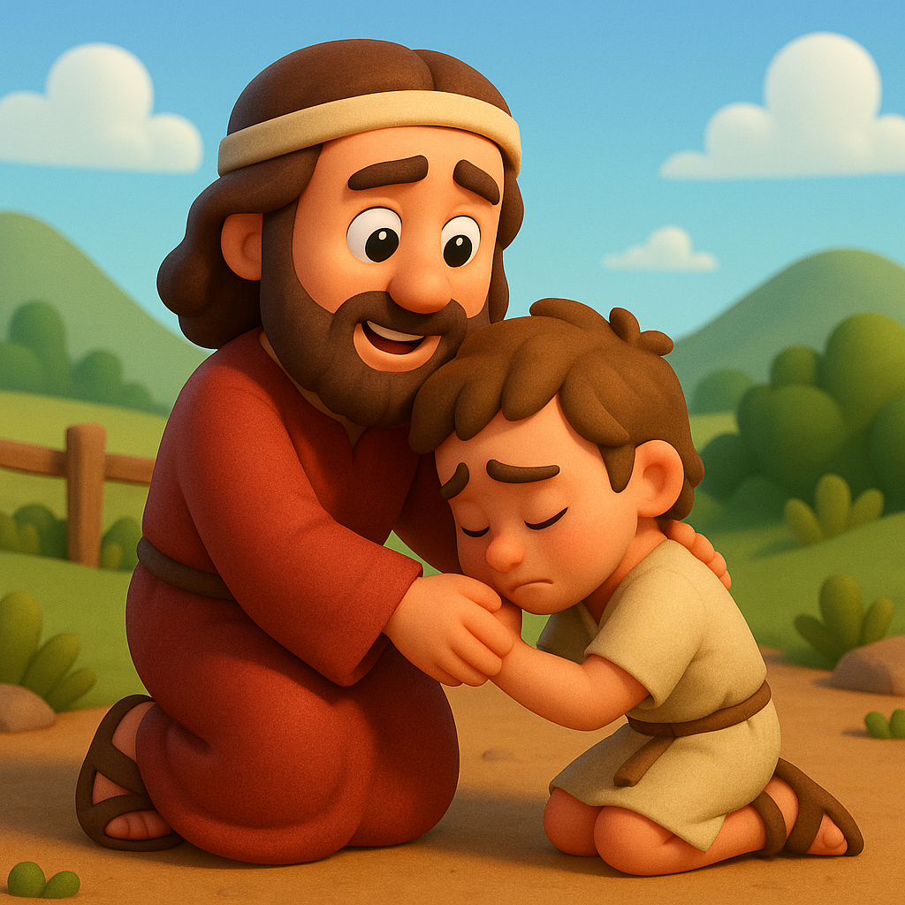
A heartwarming story about forgiveness and a father's unconditional love.
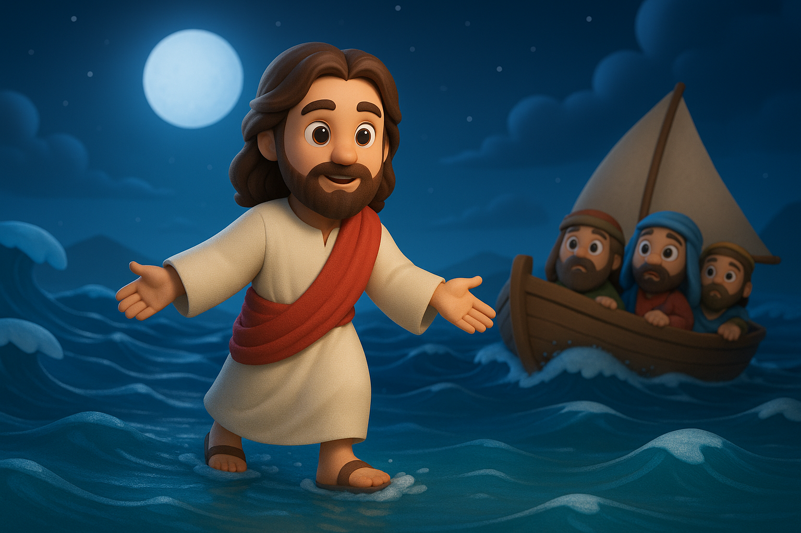
Witness the incredible moment when Jesus walked on water and calmed the storm.
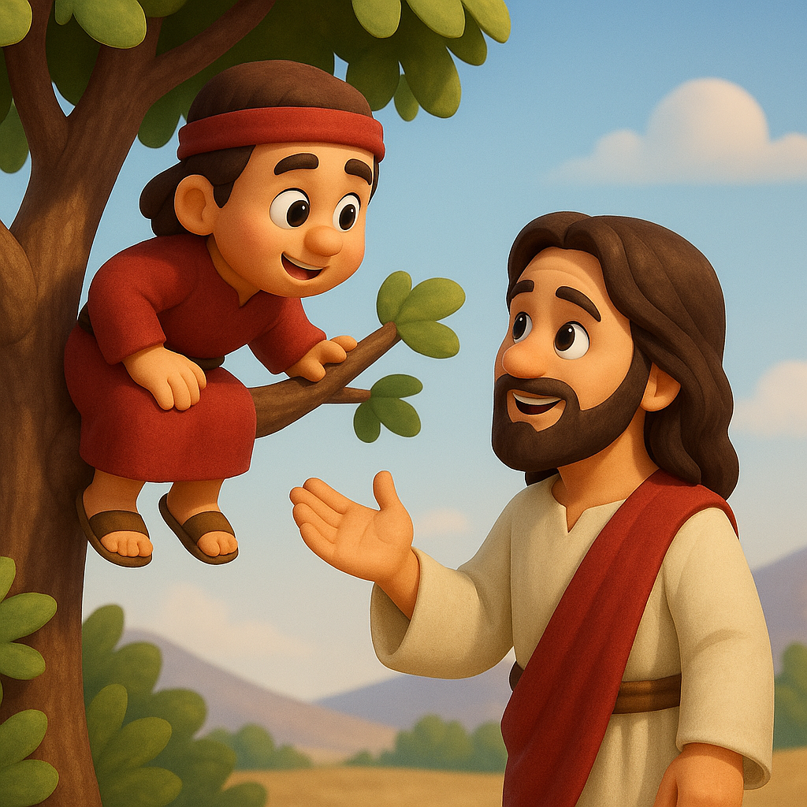
The story of a small man who climbed a tree to see Jesus and changed his life.